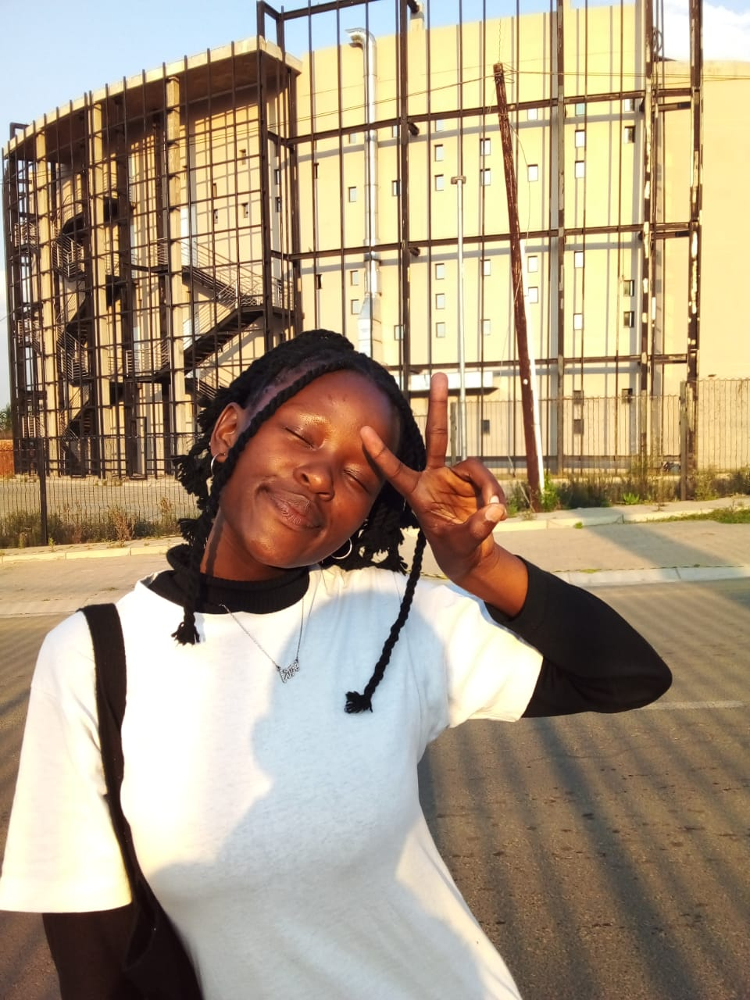

When i was six years old i started school at Qobete Primary.when i was in Pramary i used to be very smart;always scoring impressive marks I was unstoppable.Life in those days was really good.I was only struggling with English.As years passed by still struggling with English,my mother notised my struggle and every after school she would always teach me.I started reading novels,newspapers and magazins.I began to see improvement.I wrote my Primary learving examination,When the results were released,I obtained first class.
In the year 2015 i started school at Makena High.High school grows you into the person you are,the wise man once said.I have great memories,good and bad.My high school expirience influenced my development as a person.I have gained my indipendence through high school.My studying habits were also a challenge in high school.In grade 8 and 9 my studying habits were really poor and I got poor marks.When i was doing grade 10 I told myslf that it's time I begin studying really hard and stop procastinating and that went perfectly fine.I becan scoring higher marks.I passed my grade 12 with credits and i was ready to go to high learning institiude, now i am studying SOFTWARE ENGINNERING WITH MULTIMEDIA AT LIMLKOKWING UNIVERSITY OF LESOTHO.